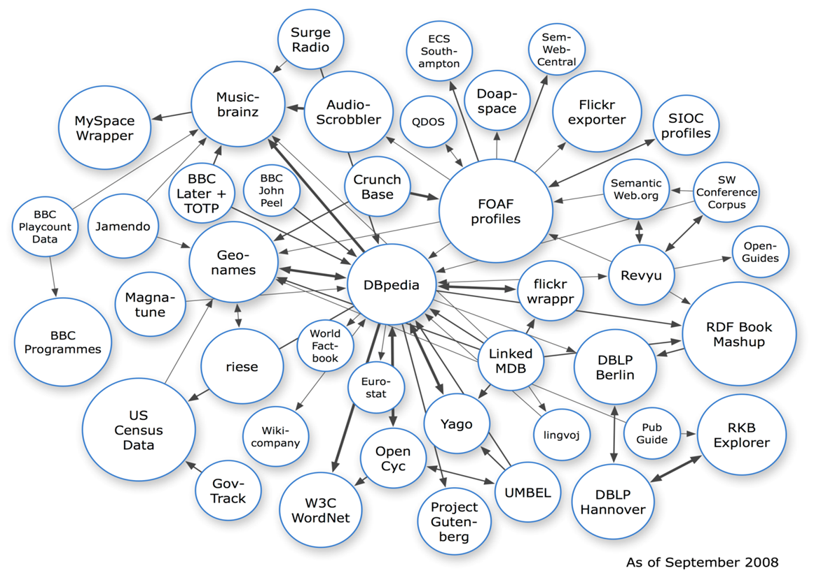

I am a Master of Engineering student in the EECS Department at UC Berkeley. The concentration of my work is Signal Processing and Communications. I have shifted my area of interest to data analysis. My master's project is about integrating and analyzing big data with public data. One of the main challenges in today's data-driven scenarios is not just the size and complexity of datasets, but the question of how to make sense of big data by combining it with other data and thus create valuable context for the data. I'd like to learn how to apply parallel computing into combining large amounts of unstructured data with highly structured data and the different classes of patterns that may be solved especially by Hadoop.
Tens of thousands of related people, thousands of sensors and millions of transactions now work to create unimaginable amounts of information. People believe there are some values hidden behind these large amounts of data but find it unable to manage, analyze and manipulate these data to their advantage. Data Integration and Analysis based on Linked Data are facing two major challenges: the first step is to integrate data by converting it to RDF(the Linked Data model) and making sure that concepts in two previously disconnected datasets are identified and mapped(entity resolution and matching). The second step is to identify those analysis tasks that can be solved within the technical framework of Linked Data(using SPARQL), or to figure out ways how to externalize these tasks into more efficient Big Data analysis frameworks(such as Hadoop or similar frameworks).
Linked Data is one method for combining very rich and freely available public data(such as Wikipedia, Freebase, data.gov, etc) and using it to be able to answer more advanced analytical questions. Linked Data is a graph and can also be represented by RDF. In Linked Data, the subject and the object of the triple are nodes and the predicate of the triple is an edge label. With mathematical graph theory, abundant metrics can be derived from the graph structure. These include metrics such as single shortest path, reachability and centrality and provided useful information for problem-solving. The Linked Data cloud is growing constantly, and data integration and analysis skills are becoming increasingly important in many fields of science and engineering.
Apache Hadoop is an open-source software framework that supports data-intensive distributed applications, licensed under the Apache v2 license. It supports the running of applications on large clusters of commodity hardware. The Hadoop framework transparently provides both reliability and data motion to applications. Hadoop implements a computational paradigm named map/reduce, where the application is divided into many small fragments of work, each of which may be executed or re-executed on any node in the cluster. In addition, it provides a distributed file system that stores data on the compute nodes, providing very high aggregate bandwidth across the cluster. Both map/reduce and the distributed file system are designed so that node failures are automatically handled by the framework. It enables applications to work with thousands of computation-independent computers and petabytes of data. Hadoop was derived from Google's MapReduce and Google File System (GFS) papers. The entire Apache Hadoop "platform" is now commonly considered to consist of the Hadoop kernel,MapReduce and Hadoop Distributed File System (HDFS), as well as a number of related projects - includingApache Hive, Apache HBase, and others. Hadoop is written in the Java programming language and is a top-level Apache project being built and used by a global community of contributors. Hadoop and its related projects (Hive, HBase, Zookeeper, and so on) have many contributors from across the ecosystem.
Amazon Elastic Compute Cloud (EC2) is a central part of Amazon.com's cloud computing platform,Amazon Web Services (AWS). EC2 allows users to rent virtual computers on which to run their owncomputer applications. EC2 allows scalable deployment of applications by providing a Web service through which a user can boot an Amazon Machine Image to create a virtual machine, which Amazon calls an "instance", containing any software desired. A user can create, launch, and terminate server instances as needed, paying by the hour for active servers, hence the term "elastic". EC2 provides users with control over the geographical location of instances that allows for latency optimization and high levels of redundancy.